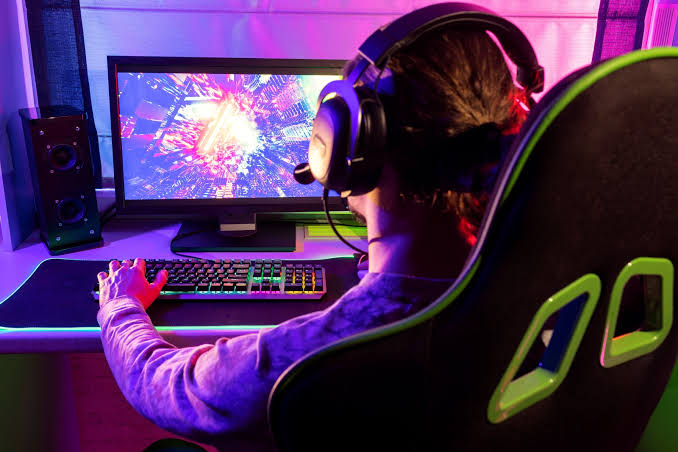

Noticia principal
 VIDEOJUEGOS
VIDEOJUEGOS
Minecraft: el universo de bloques que sigue conquistando jugadores
Minecraft continúa siendo uno de los videojuegos más populares del mundo. Su libertad creativa y sus infinitas posibilidades permiten a los jugadores construir, explorar y vivir nuevas aventuras.
La creatividad no tiene límites. Millones de jugadores siguen disfrutando de este universo virtual.
Leer más sobre MinecraftÚltimas noticias
 ENTRETENIMIENTO
ENTRETENIMIENTO
Fortnite continúa sorprendiendo a sus jugadores
El popular videojuego sigue incorporando novedades, eventos y experiencias para mantener activa a su comunidad.
Leer más sobre Fortnite TECNOLOGÍA
TECNOLOGÍA
Roblox apuesta por la creatividad
La plataforma permite a millones de usuarios crear sus propios juegos y compartir experiencias con otras personas.
Leer más sobre Roblox
GAMINGLa industria de los videojuegos sigue creciendo
Las nuevas tecnologías están transformando la forma de jugar y disfrutar de los videojuegos en todo el mundo.
Descubrir más ESPORTS
ESPORTS
Los esports ganan protagonismo
Las competiciones de videojuegos reúnen cada vez a más jugadores y aficionados de diferentes países.
Leer más sobre esportsNoticias destacadas
El futuro del mundo gaming
La innovación tecnológica, la creatividad y las comunidades de jugadores están transformando el entretenimiento digital.
Gaming News: conectado al mundo de los videojuegos.